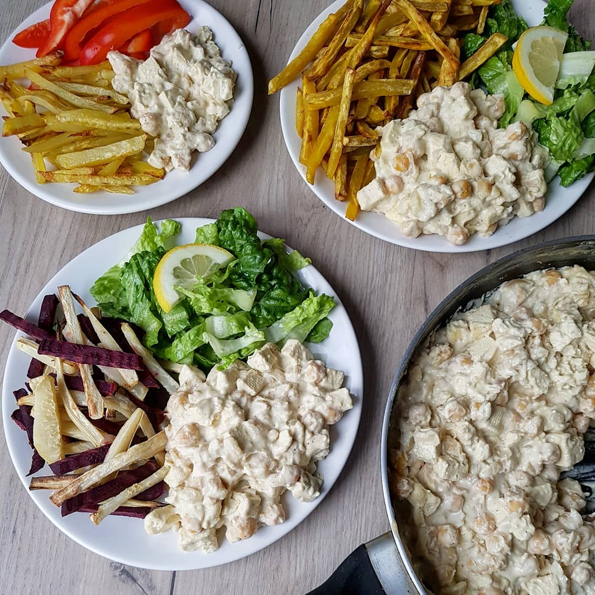

Horčicová omáčka podľa @healthyfitlifestyleway — Normy Jedál
Na typickou hospodskou stravu akorát ve zdravějším rostlinným provedení jsem myslím celkem machr 🙌🏼😁
Tofu s cizrnou v krémový hořčicový omáčce a zeleninový hranolky. Respektive zeleninový (celer, petržel, řepa) pro mě, batátový pro manžela a bramborový pro dítě, holt každej jsme na jiným levelu, no 🙈😁
Co se týká té omáčky, tak na tu jsem opekla v pánvi cibuli, přidala obyč tofu osušený od láku, nasolený černou solí a nakrájený na kostky, po chvíli i uvařenou cizrnu, vmíchala do toho hořčici, zalila kešu smetanou, nechala probublat a dochutila. Jo a na kešu smetanu stačí klasicky na 4 hod namočit kešu ořechy a rozmixovat s vodou dohladka.
Hranolky dělám úplně jednoduše, prostě nakrájím zeleninu, osolím, opepřím a upeču. Je to spíš asi jako pečená zelenina než hranolky, ale přijde mi zbytečný cpát tam olej nebo škrob pro křupavost, chutná mi to takhle a je mi po tom dobře, takže tak 🤷🏻♀️🙈
#dnesjim #hranolky #bezmasa #horcicovaomacka #zdravejidlo #zdravejist #veganrecepty #mujobed #cojivegan #dnesvarim #cizrna #kremovaomacka #hranolky #zelenina #zdravyobed #dnesobedvam #fitrecepty